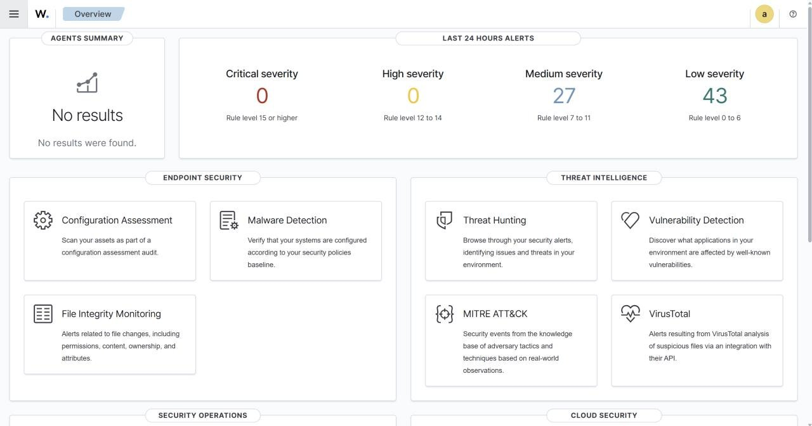

Selected work ITDR Home Lab
01 / Security practice / Personal lab
ITDR Home Lab
Getting a Windows endpoint to report into a security monitoring system — and tracing the infrastructure faults along the way.
A personal identity threat detection and response (ITDR) home lab, started in June 2026. Phase 1 established endpoint telemetry collection with Wazuh 4.9.2 and Sysmon 15.20 on a single laptop.
I built and documented the virtual environment, enrolled the Windows endpoint and resolved storage and network faults. Detection-rule development remains a future phase.
Phase 1 complete; development paused
Why I built the lab
I built a local security information and event management (SIEM) system to collect activity from a Windows endpoint. I wanted to work through the storage, networking and enrolment problems that a guided lab can hide.
The focus is identity and endpoint activity. Sysmon records process, network and file events so they can be collected and inspected in Wazuh.
Architecture and working milestone
An Ubuntu Server 22.04 virtual machine running a Wazuh 4.9.2 all-in-one deployment: indexer, server and dashboard on one host. A Windows 11 Enterprise virtual machine as the monitored endpoint, with Sysmon 15.20 installed and configured against the SwiftOnSecurity ruleset. Both on a Lenovo ThinkPad under VMware Workstation, bridged onto the local network.
Phase 1 was complete once the agent enrolled, telemetry reached the indexer and Windows events appeared in the dashboard. Reaching that point exposed four separate infrastructure faults.
Fig. 1 — where telemetry goes. The diagram follows Windows endpoint telemetry through analysis, storage and search. It illustrates the collection path, not a recorded incident. On wider screens, the packet flow repeats every eight seconds.
Component roles
Four faults, in the order they happened
The build log records the symptom, the layer that caused it and the fix.
| Symptom | Diagnosis | Fix |
|---|---|---|
| VM storage corrupting | OneDrive was syncing the directory holding the virtual disks and taking locks on .vmdk files mid-write. |
Moved every VM file outside the OneDrive tree. Cloud sync and files that write continuously do not belong in the same folder. |
| Server unreachable | A stale netplan configuration held a static address of 192.168.170.10, from a subnet that stopped existing when I changed network adapters. The interface came up; nothing could route to it. |
Rewrote netplan against the bridged adapter. Found by comparing the configured address against the adapter’s actual subnet instead of debugging the services on top. |
| Indexer stalling | During this build, the 50 GB virtual disk reached 99% usage. The symptom looked like slow indexing, so I investigated the service before checking disk usage with df. |
Expanded to 100 GB via LVM with no rebuild. Now I size for retention rather than for install. |
| SSH dead on NAT | On NAT networking the host was unreachable over SSH while the agent still enrolled successfully, so the failure looked partial and I spent time on the wrong layer. | Reverted to bridged to get the lab productive. NAT restoration on the correct subnet is documented and queued rather than abandoned. |
Each fault appeared one layer above its cause. Storage locks looked like VMware corruption, stale networking looked like a Wazuh outage, and a full disk looked like an indexer performance problem. I now check the underlying storage and network state before changing the service on top.
What I would change
- Build detection rules alongside the infrastructure. I completed endpoint collection before developing my own detection rules. I would plan the test events and intended detections together so that receiving data is distinguished from detecting a specific behaviour.
- Size the disk for retention from the start. The 50 GB disk filled during this build. I would estimate storage from the expected event volume and retention period; this experience does not establish a universal Wazuh disk requirement.
- Generate adversarial telemetry deliberately. Controlled simulations could test whether the expected events reach the dashboard. Atomic Red Team is a possible tool for a future phase. Security scanning or testing would be limited to systems I own or have explicit permission to test.
- Rotate credentials before writing anything public. The initial lab password lived in plaintext in my notes for longer than it should have. It is rotated now, which is the correct outcome and an uncomfortable thing to have learned by nearly publishing it.
Where it goes next
Phase 2 is detection-rule development and incident-response exercises against the endpoint. The lab is paused while university assessment and paid work take priority. The environment is still available when I return to it.
What backs this up
This Phase 1 dashboard overview provides context for the build. The completed collection milestone is documented in the build notes, available on request. The screenshot is not a recorded incident or a detection-performance result.

Learning example / Illustrative, not a recorded incident
Word opens PowerShell.
What would you check?
This condensed example shows how process telemetry can become a question worth investigating. It is separate from the completed Phase 1 lab. Rule development and response exercises remain planned work.
01 / Observe the process
In this sample event, WINWORD.EXE starts powershell.exe with encoded arguments. That parent–child relationship is worth inspecting; it does not prove malicious activity by itself.
Sample Windows process event
Parent: WINWORD.EXE
Process: powershell.exe
Flags: -nop -w hidden -enc
Event: Sysmon Event ID 102 / Consider a rule
Example rule identifier 100210 maps to MITRE ATT&CK T1059.001 (PowerShell). A sample local_rules.xml entry is a teaching aid, not proof of a deployed detection programme.
A useful rule would need testing against both expected activity and deliberately generated test events.
03 / Interpret the alert
An illustrative Level 12 alert indicates high importance. Its visibility and meaning depend on configuration and the surrounding event context. No measured detection or response time is claimed here.
04 / Ask the next question
A possible triage sequence: decode and inspect the payload safely; identify the document and its source; correlate process, network and file events; then decide whether containment or a documented exception is appropriate.
These are possible investigation steps, not a recorded incident timeline.